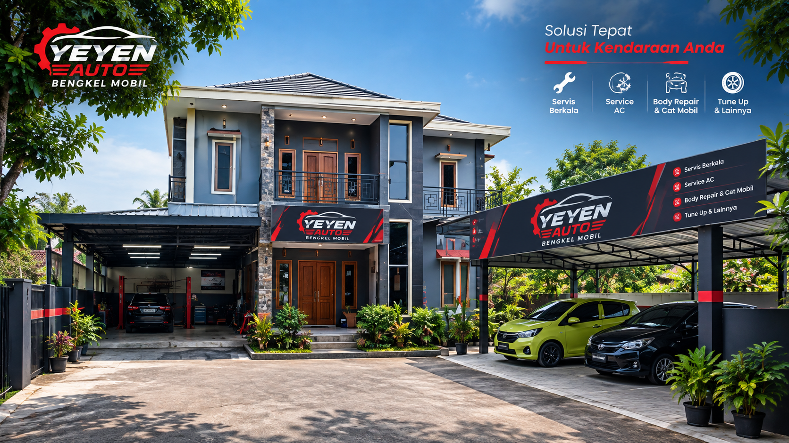
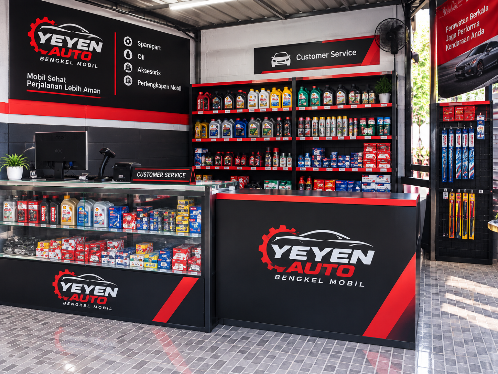

Body Repair
Perbaikan bumper, panel penyok, dan kerusakan body lainnya — dari senggolan ringan sampai kecelakaan yang lebih serius.
Konsultasi Body Repair →
Body repair, cat mobil, detailing, dan ceramic coating di Cirebon. Dikerjakan teknisi berpengalaman, dengan estimasi yang jelas sebelum kerja dimulai.

WORKSHOP FLOOR — CIREBONKerusakan kecil yang dibiarkan biasanya jadi lebih mahal untuk diperbaiki. Kalau salah satu ini terasa familiar, saatnya dicek.
"Jangan menebak kerusakannya sendiri."
Kirimi kami foto kondisi mobil Anda — kami bantu lihat dulu sebelum Anda repot datang ke bengkel. Cepat, tanpa basa-basi.
Kirim Foto via WhatsAppEmpat layanan inti — masing-masing dikerjakan oleh teknisi yang fokus di bidangnya, bukan asal serba bisa.
Perbaikan bumper, panel penyok, dan kerusakan body lainnya — dari senggolan ringan sampai kecelakaan yang lebih serius.
Konsultasi Body Repair →Refinish dan pengecatan ulang dengan pencampuran warna yang disesuaikan agar hasil menyatu dengan warna asli mobil.
Konsultasi Cat Mobil →
Deep cleaning, paint correction, dan poles menyeluruh untuk mengembalikan kilap cat dan kebersihan interior.
Konsultasi Detailing →
Lapisan pelindung cat yang membuat permukaan lebih tahan gores, mudah dibersihkan, dan mengilap lebih lama.
Konsultasi Ceramic Coating →
Lima langkah yang sama untuk setiap mobil yang masuk — supaya Anda tahu persis mobil sedang di tahap apa.
Mobil diperiksa langsung atau dari foto yang Anda kirim.
Kami sampaikan perkiraan biaya dan waktu pengerjaan.
Pengerjaan sesuai layanan yang disepakati.
Hasil diperiksa ulang sebelum mobil diserahkan.
Mobil siap diambil, dengan penjelasan hasil kerja.
Geser slidernya untuk lihat perbandingan sebelum dan sesudah. Foto referensi di bawah menggambarkan jenis pengerjaan yang kami lakukan — dokumentasi dari pekerjaan langsung akan menyusul di halaman ini.

 Before
After
Before
After
Catatan: foto ilustrasi untuk menunjukkan tahapan preparation → refinish. Belum menampilkan dokumentasi mobil klien tertentu.


DOKUMENTASI/HASIL-PENGERJAAN.TERBARU → akan diganti dengan foto before/after dari pekerjaan aktual bengkel secara berkala.

Bengkel Mobil Yeyen Auto melayani body repair, cat mobil, detailing, dan ceramic coating di Cirebon. Kami percaya hasil yang rapi datang dari proses yang jelas — bukan tebak-tebakan. Setiap mobil yang masuk diperiksa dulu, diberi estimasi, baru dikerjakan.
Ulasan lengkap dari klien kami tersedia langsung di Google Business Profile — supaya Anda bisa membaca versi asli dan terverifikasi, bukan kutipan yang kami tulis ulang di sini.
Baca Semua Ulasan di Google →Berbasis di Cirebon, menjangkau area sekitar berikut ini.
blok Cikadu, RT.008/RW.004, Sidawangi,
Kec. Sumber, Kab. Cirebon, Jawa Barat 45611
Kalau kondisi mobil Anda mengganggu, jangan tunggu sampai kerusakannya semakin besar. Kirim foto atau langsung hubungi kami.